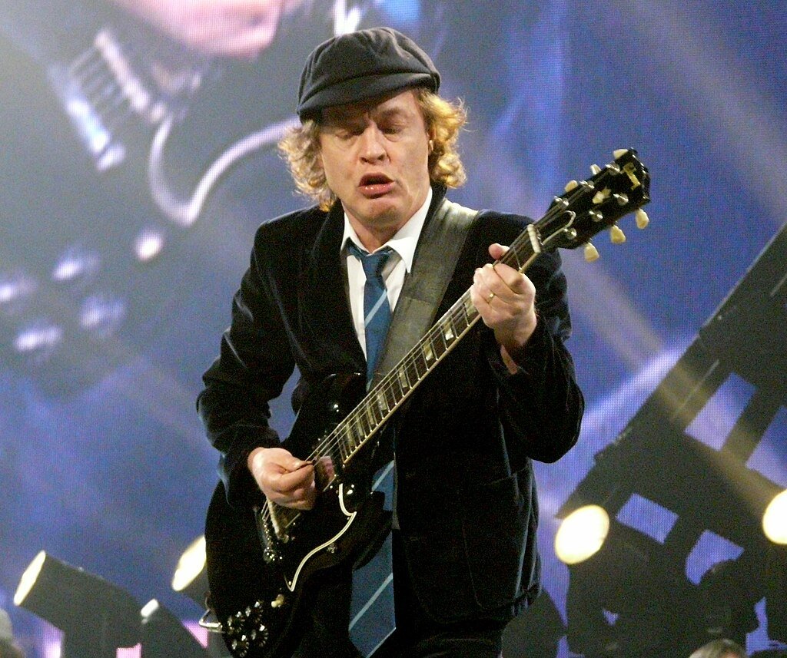
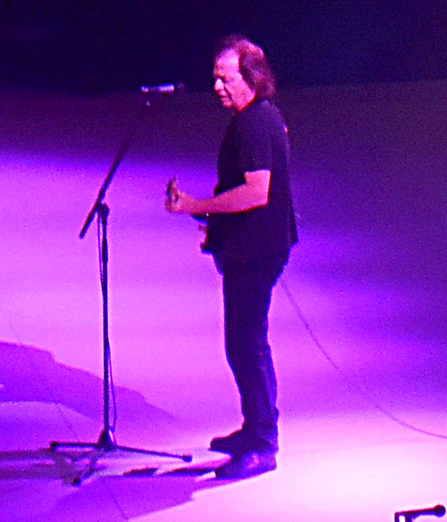
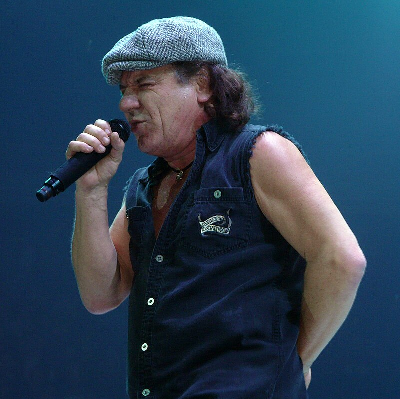
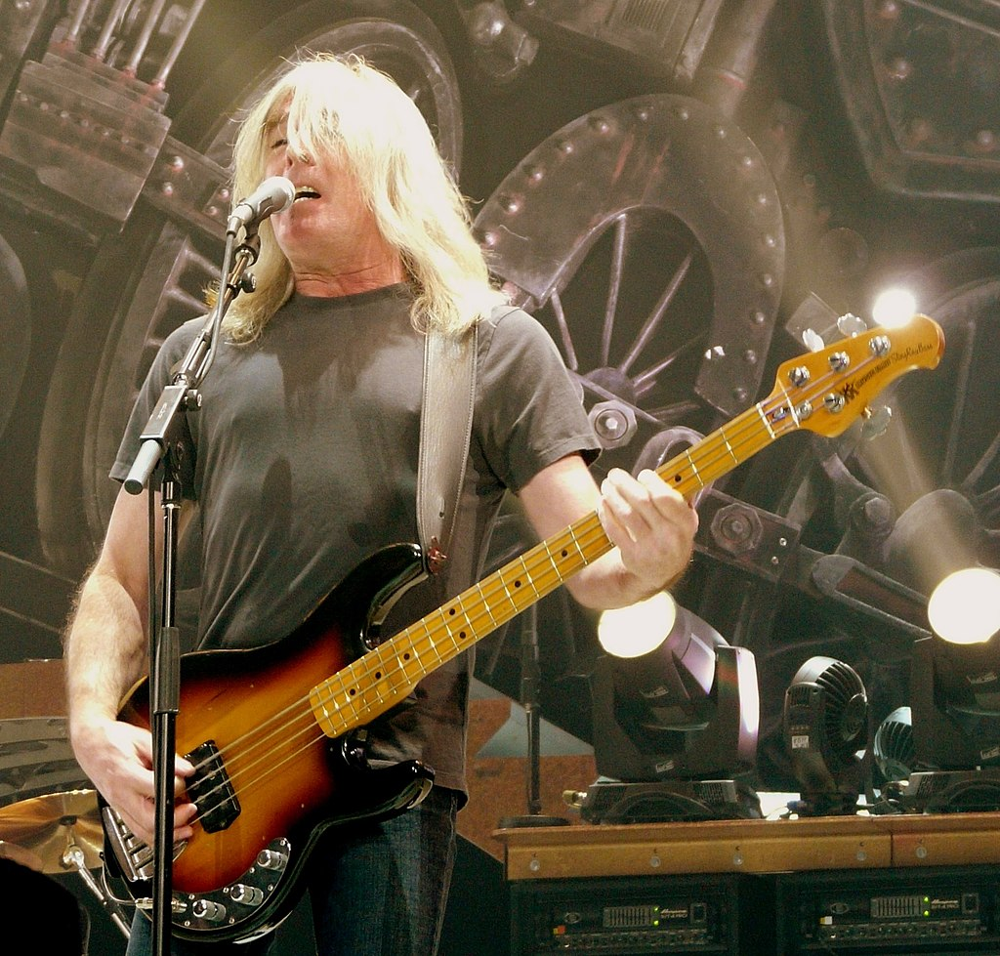
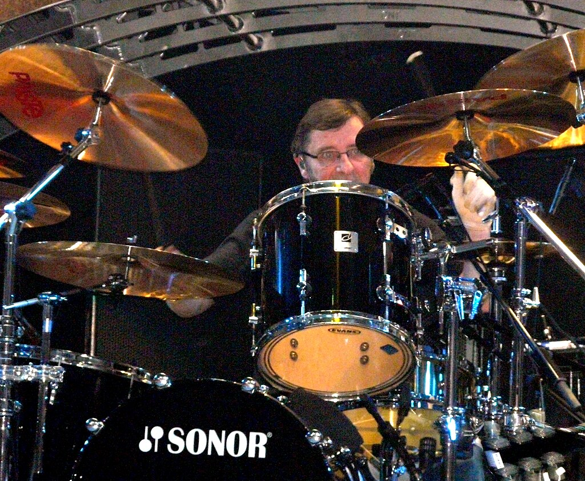

ORAGONIZACION DE LA BANDA
ES INCREIBLE QUE ESTAS MAQUINAS SIGAN TOCANDO!
Conocelos un poco mejor...
ANGUS YOUNG
Angus McKinnon Young (Glasgow, Escocia, Reino Unido, 31 de marzo de 1955) es un músico escocés de nacionalidad australiana, conocido por ser uno de los miembros fundadores y el principal guitarrista del grupo AC/DC, aparte de ser el único miembro que ha permanecido en la banda desde su inicio. Fue introducido en el Salón de la fama del Rock and Roll junto a los miembros actuales de la banda en el 2003. Es conocido por sus salvajes y enérgicos movimientos en el escenario, y su peculiar uniforme de colegial. Además, en el año 2014 se situó entre los mejores guitarristas de todos los tiempos, concedido por la revista Rolling Stone, y en el puesto 24 en una nueva edición de 2011 de "los 100 mejores guitarristas de todos los tiempos", también por la revista Rolling Stone, y en el puesto número 20 de la lista "los 100 mejores guitarristas", de la revista Total Guitar.
STEVIE YOUNG
Stevie Young (Glasgow, Escocia, 11 de diciembre de 1956) es un músico británico conocido por ser miembro de la banda AC/DC hijo de Steven Young y sobrino de Angus Young y Malcolm Young de AC/DC y de los también músicos George Young y Alex Young. Su instrumento es la guitarra rítmica.
BRIAN JOHNSON
Brian Francis Johnson De Luca (Dunston, 5 de octubre de 1947) es un cantante y compositor británico. Es conocido por ser el tercer vocalista de la banda britano-australiana de hard rock AC/DC..
CLIFF WILLIAMS
Clifford Williams (Romford, Inglaterra; 14 de diciembre de 1949) es un músico británico, más conocido por ser el bajista de la banda de hard rock AC/DC. Es el padre de Erin Williams, actriz y modelo, más conocida como Erin Lucas.
PHIL RUDD
Phillip Hugh Norman Witschke Rudzevecuis (Melbourne, 19 de mayo de 1954), conocido profesionalmente como Phil Rudd, es un baterista australiano de hard rock. Conocido por ser el baterista de AC/DC, es considerado el baterista original de la banda; junto con Cliff Williams y los hermanos Young conforma la formación clásica del grupo. Su etapa en AC/DC comprende desde 1975 a 1983, posteriormente desde 1994 hasta 2014 y desde octubre de 2020 a día de hoy. Desde la salida del grupo por parte de Mark Evans, se convirtió en el único integrante australiano del grupo. Junto con los hermanos Young, Cliff Williams y Brian Johnson, ingresó al Rock and Roll Hall of Fame, en 2003. La revista Rolling Stone, lo ubicó en el puesto N°86 en la lista de Los 100 Mejores Bateristas de la Historia. Ha vuelto oficialmente a AC/DC con el anuncio del álbum Power Up que fue lanzado el 13 de noviembre de 2020.